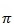

Категорії функцій
Опишемо призначення найуживаніших функцій кількох категорій.
Математичні функції
Функції Microsoft Excel здатні реалізувати майже будь-яку з математичних функцій, з якими вам доводиться мати справу в середній школі: тригонометричні функції, показникові, логарифмічні тощо. Прямі тригонометричні функції легко розрізнити за їх назвами:
- SIN(число) — sinx;
- С0S(число) — cosx;
- TAN(число) — tgx.
Назви обернених тригонометричних функцій починаються з літери «А»:
- ASIN(число) — arcsinx;
- AС0S(число) — arccosx;
- ATAN(число) — arctgx.
Аргументи тригонометричних функцій зазначають у радіанах, тому корисною є функція РІ(), яка повертає значення числа . Наприклад, величину sin обчислюють за формулою SIN(PI()/2). Градуси переводить у радіани функція RADIANS(кут)(рос. РАДИАНЬІ), а радіани у градуси — функція DEGREES(кут)(рос. ГРАДУСЬІ).
Серед інших математичних функцій найчастіше використовуються такі:
- ABS(число) — |х| (модуль числа);
- ЕХР(число) — (експонента);
- LN(число) — Іnх (натуральний логарифм);
- RND() — випадкове число, яке більше нуля або дорівнює йому та менше одиниці;
- LOG(число;основа) — логарифм заданого числа за заданою основою;
- ROUND(число;кількість_розрядів)(рос. ОКРУГЛ) — округлення числа до заданої кількості десяткових розрядів;
- MОD(число;дільник)(рос. ОСТАТ) — остача від ділення числа на дільник;
- SUM(число1;число2;...)(рос. СУММ) — обчислення суми набору чисел, записаних через крапку з комою або розміщених у діапазоні з заданою адресою;
- РRОDUСТ (число1;число2;...)(рос. ПРОИЗВЕД) —обчислення добутку чисел, записаих через крапку з комою або розміщених у діапазоні з заданою адресою.
Для швидкого введення функції SUM у Microsoft Excel на вкладці Основне є кнопка  (Автосума), якою ви вже користувалися, виконуючи вправу 2.1. Якщо клацнути цю кнопку та натиснути клавішу Enter, відобразиться сума чисел у клітинках, розміщених над поточною клітинкою або ліворуч від неї.
(Автосума), якою ви вже користувалися, виконуючи вправу 2.1. Якщо клацнути цю кнопку та натиснути клавішу Enter, відобразиться сума чисел у клітинках, розміщених над поточною клітинкою або ліворуч від неї.
Статистичні функції
Одною з основних сфер застосування табличного процесора є статистичний аналіз даних. Відтак категорія статистичних функцій дуже численна. Наразі вам достатньо знати лише кілька з них:
- МАХ(число1;число2;...)(рос. МАКС) — повертає максимальне значення з набору чисел або діапазону;
- MIN(число1;число2;...)(рос. МИН) — повертає мінімальне значення з набору чисел або діапазону;
- AVERAGE(число1;число2;...)(рос. СРЗНАЧ) — повертає середнє арифметичне, обчислене за діапазоном значень або набором чисел;
- COUNTІF(діапазон;критерій (рос. СЧЕТЕСЛИ) — обчислює кількість непорожніх клітинок у діапазоні, значення яких дорівнює другому аргументу.
Наведемо приклади використання цих функцій. Якщо аргументом функції є діапазон А1:А5, заповнений значеннями так, як показано на рис. 3.4, то значення функцій будуть такими: МАХ(А1:А5)=10; MIN(A1:A5)=2; AVERAGE(A1:A5)=5,2; COUNTIF(A1:A5;5)=2.
Рис. 3.4. Діапазон, заповнений значеннями
Фінансові функції
Основне призначення фінансових функцій — обчислення грошових сум, відсотків або термінів виплати за отримані кредити, а також прибутку як результату інвестування. У більшості функцій обчислення здійснюються за формулами складних відсотків.
Розглянемо лише одну, найбільш типову задачу: ви відкриваєте в банку депозитний рахунок і відразу вносите на нього 1000 грн, а протягом року поповнюєте його щомісяця на 100 грн. Банк нараховує вам 18 % річних в кінці кожного місяця, і отриманий прибуток автоматично переводиться на ваш рахунок. Питання: яка сума накопичиться на вашому рахунку на кінець року?
Задачу можна розв'язати, обчислюючи суми на рахунку послідовно в кінці кожного місяця. Так, за перший місяць банк нарахує 18%/12 = 1,5% від загальної суми, і у вас на рахунку буде 1000 + 1000 * 1,5% = 1015 грн. У кінці другого місяця відсотки нараховуватимуться вже не на 1000 грн, а на 1015 (це і називається «складним відсотком»), і у вас на рахунку буде 1015 + 1015 * 1,5% = 1030,22 грн. Фінансова функція FV (рос. БС) автоматизує виконання обчислень за описаною схемою. Вікно аргументів функції зображено на рис. 3.5.
Рис. 3.5. Вікно аргументів функції FV
Пояснимо зміст аргументів описуваної функції.
- Ставка — відсоткова ставка, тобто кількість відсотків, які нараховуються на загальну суму в кінці кожного періоду нарахувань. У нашому прикладі період дорівнює одному місяцю, в кінці якого нараховується 18%/12 = 1,5%.
- Кпер — кількість періодів, за якими здійснюватиметься обчислення. У нашому випадку період дорівнює одному місяцю, а нам потрібно обчислити стан рахунку за підсумком року. Тому значення цього аргументу — 12.
- Спл — сума, на яку поповнюють рахунок протягом кожного періоду. У нашій задачі це 100 грн.
- Зв — сума, яку вносять на рахунок відразу (у нас — 1000 грн).
- Тип — час оплати. Якщо цей аргумент дорівнює 0, то оплата здійснюється наприкінці періоду, якщо 1 — на початку.
Отже, після введення аргументів ми отримаємо таку формулу: =FV(18%/12;12;100;1000;0). На рис. 3.6 у діапазоні В1:В14 наведено результати послідовних обчислень, а у клітинці АІ7 — обчислень із використанням фінансової функції.
Рис. 3.6. Обчислення прибутку від інвестиції з використанням послідовності формул та фінансової функції
Логічні функції
Іноді є потреба розв'язувати задачу одним із варіантів, залежно від виконання (чи невиконання) певних умов. У такому разі застосовують логічні функції, зокрема ІF (рос. ЕСЛИ), АND (рос. И), ОR (рос. ИЛИ). Їх можна знайти в категорії Логічні.
Логічну функцію IF використовують для перевірки умови та подальшого обчислення одного зі значень: першого, якщо умова істинна, другого — якщо вона хибна. Ця функція має вигляд:
ІF(лог_ вираз;значення_якщо_істина;значення_якщо__хибність).
Тут лог_вираз — це будь-яке значення чи вираз, результат обчислення якого істинний або хибний; значення_якщо_істина — це значення функції у разі, коли логічний вираз істинний; значення_якщо_ хибність — значення функції у тому разі, коли логічний вираз хибний. Так, вираз ІF(А1>А2;100;0) дорівнюватиме 100, якщо А1>А2, і 0 в інших випадках.
Щоб перевірити виконання більше ніж однієї умови, застосовують вкладення функції ІF у функцію ІF. Наприклад, функція ІF(D4>0;"Два дійсні корені:";IF(D4=0;"0дин дійсний корінь:";"Дійсних коренів немає")) дає змогу обчислити кількість коренів квадратного рівняння залежно від значення дискримінанта у клітинці D4. Вона діє за схемою, зображеною на рис. 3.7.
Рис. 3.7. Схема дії функції IF
Логічна функція AND набуває значення істинно (TRUE), якщо всі її аргументи мають це значення, і значення хибно (FALSE), якщо хоча б один з аргументів має значення хибно. Наприклад, результатом виразу AND(7+2=9;4-2=3) буде FALSE, оскільки друга рівність (4-2=3) хибна.
Логічна функція OR набуває істинного значення TRUE, якщо хоча б один з її аргументів має це значення.